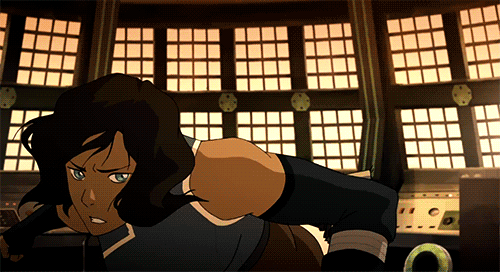
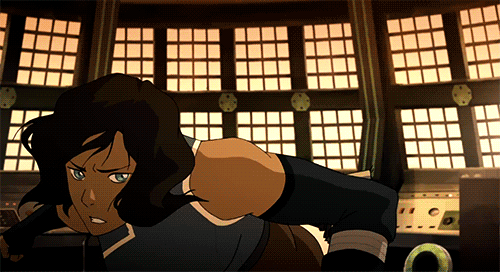
Games I've Made:
Solo:
an ordinary typing game ( Game | Code | Gameplay Video )

Description: A typing game where the typing based controls change as the player progresses. It was made in Javascript.
Rad Crunch ( Game | Code | Gameplay Video )

Description: An arcade shooter mini-game made in the Crisp Game Engine.
Endless-Runner ( Game | Code | Gameplay Video )
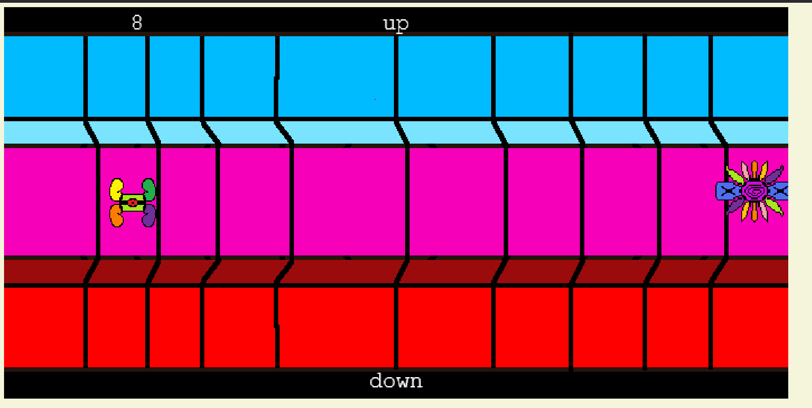Description: An endless runner game where the player controls movement by typing words. It was made in Phaser.
Geocache Game ( Game | Code | Gameplay Video )
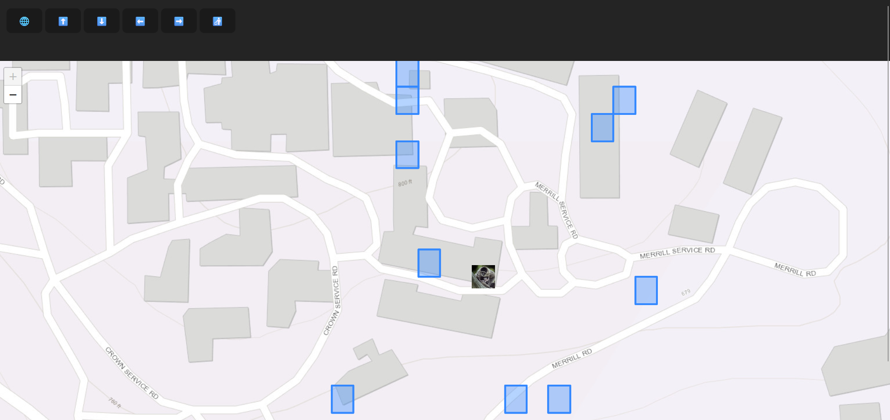
Description: A geocache game akin to Pokemon Go, where the user
moves around in real life to obtain and place tokens. It was made in
Typescript.
Notes: The video only shows button based movement because I
didn't want to record me walking around with my laptop or phone.
Google Offline Dinosaur Run Clone ( Game | Code | Gameplay Video )
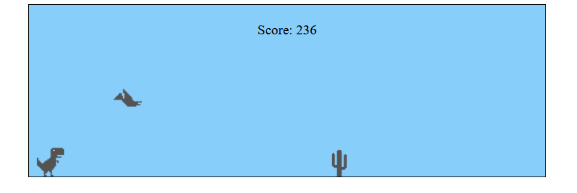
Description: A remade version of the google offline endless
runner. It was made in typescript.
Notes: It is currently
not working on github for some reason, and I need to fix it
Canvas Paint Game ( Game | Code | Gameplay Video )
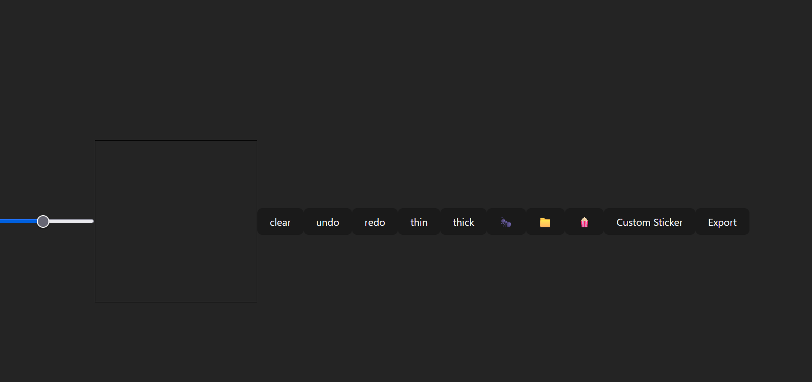Description: An MS paint clone with built in stickers, and the ability to make custom stickers, and then export and save your creation. It was made in Typescript.
Rocket-Patrol ( Game | Code | Gameplay Video )
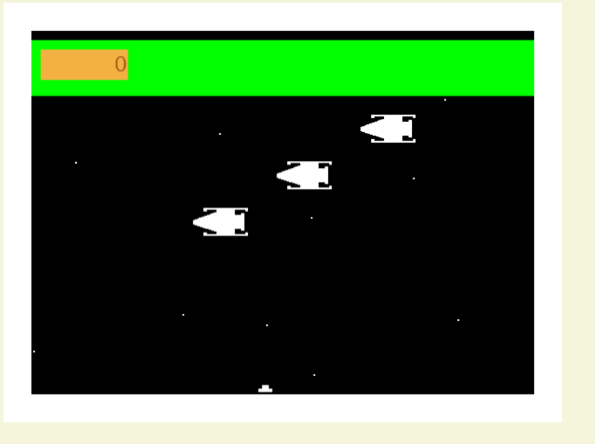Description: A recreation of the old arcade game Rocket Patrol. It was made in Phaser.
Rocket-Patrol-Mods ( Game | Code | Gameplay Video )
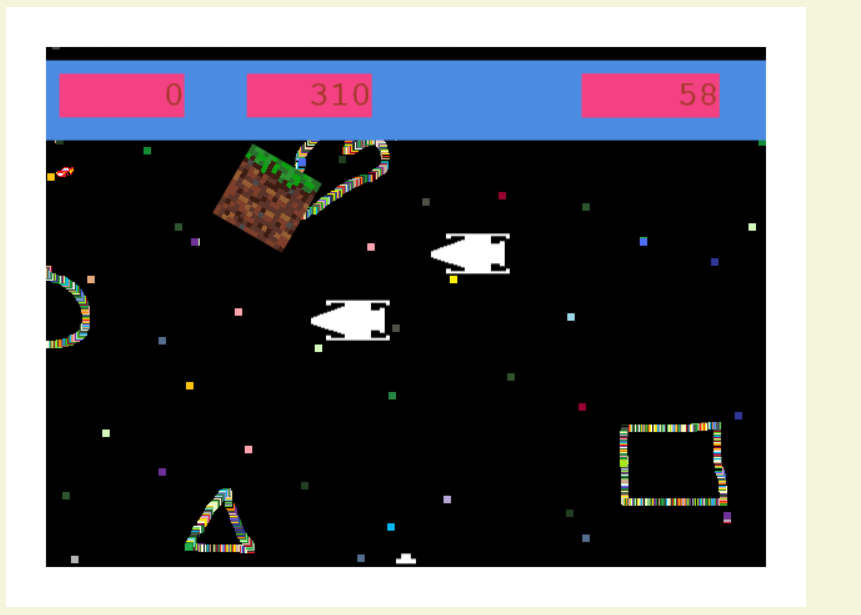Description: Going through and adding mods to my recreation of Rocket Patrol. This was also made in Phaser.
Wordle Clone ( Game | Code | Gameplay Video )

Description: A clone of the popular game Wordle. It was made in
the C programming language.
Notes: I need to find some way to make a web playable C program
and get a video.
Tilemap Tutorial ( Game | Code | Gameplay Video )
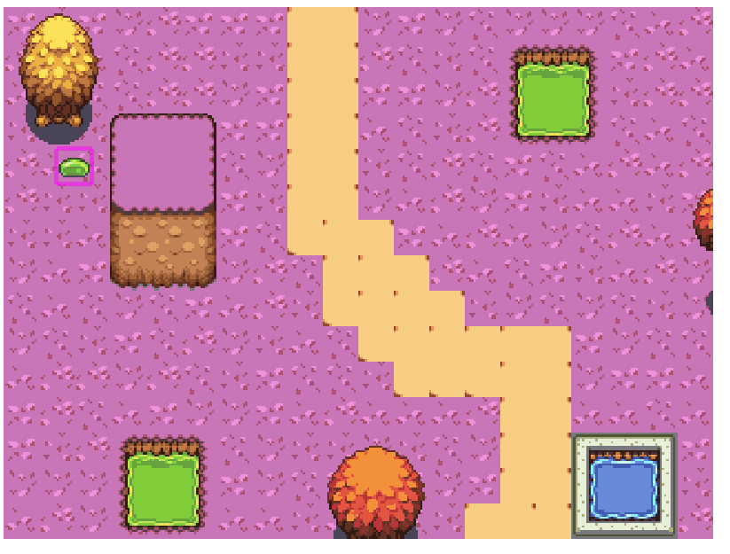Description: A very basic game I made while following a tutorial for how to implement tilemaps using the program “Tiled” in Phaser.
Killed in Cold Blood ( Game | Gameplay Video )
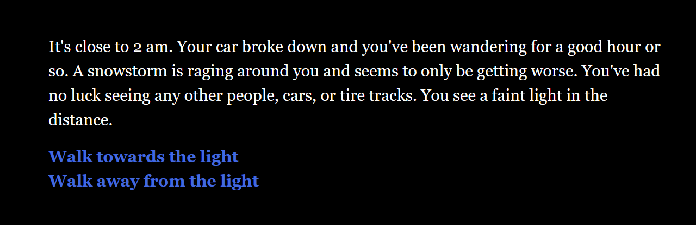Description: A text based horror game. It was made in Twine.
Wizards & Lizards ( Cards | Rules )

Description: A physical card game about making pairs with
special effects, that can either help you, or hinder the people you’re
playing with.
Notes: I left the cards and rules back at my parent’s house, so
I need to take pictures of them when I go back at some point.
Group:
Rear Window Game ( Game | Code | Gameplay Video )
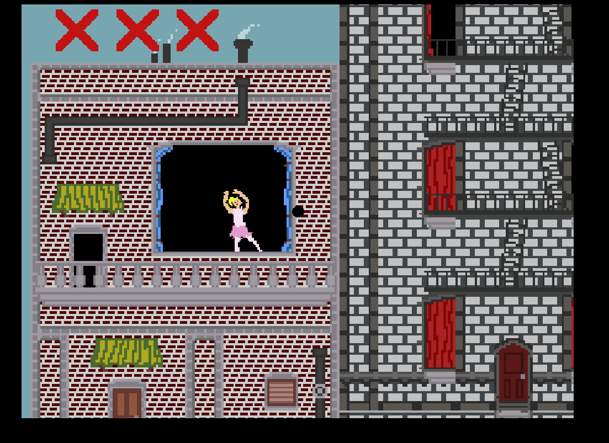
Made By: Sean Rowley & Miles Marsh
Description: An eye spy game based on the movie “Rear Window.”
It was made in Phaser.
What I Did: I did all of the coding except for implementing the
tileset.
CCC ( Game | Code | Gameplay Video )
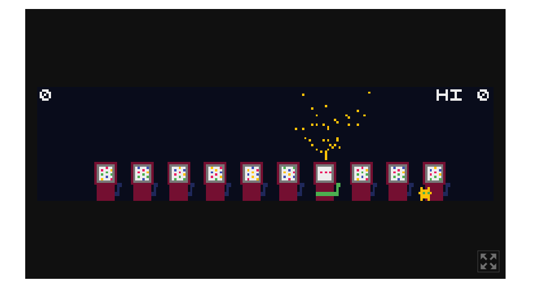
Made By: Sean Rowley, Miles Marsh, Angela Ku, Cassidy Aydin, &
Sooin Jung
Description: An endless clicking minigame where the player
bounces back and forth and tries not to miss the chosen slot machine.
It was made in the Crisp Game Engine.
What I Did: I added collisions, the functionality of the slot
machines, and making sure the character turns around correctly.
Runeomancy ( Game | Code | Gameplay Video )
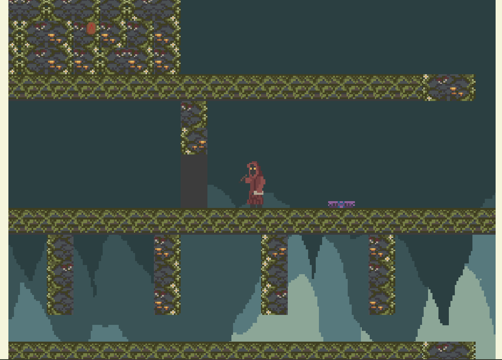
Made By: Sean Rowley, Miles Marsh, & Adrian Bruce
Description: A platforming/puzzle game where the player
combines different runes to cast different spells to progress. It was
made in Phaser.
What I Did: I implemented the tileset, designed the level, made
all the character movement and interactions, and managed all the
scenes in the Phaser Engine.
Guarden ( Game | Code | Gameplay Video )
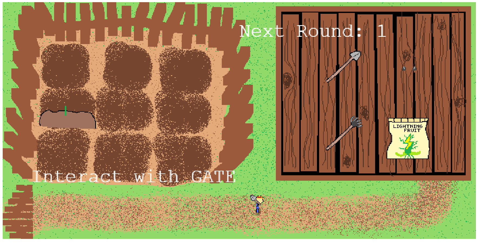
Made By: Sean Rowley, Miles Marsh, Wendy Chen, and Brandon
Tanega
Description: An endless wave based gardening game. It was made
in Phaser.
What I Did: I was in charge of making and implementing the
enemies and the different scenes in phaser, and making sure the player
could switch between rooms when we intended them to.
Stacked Cats ( Game | Code | Gameplay Video )
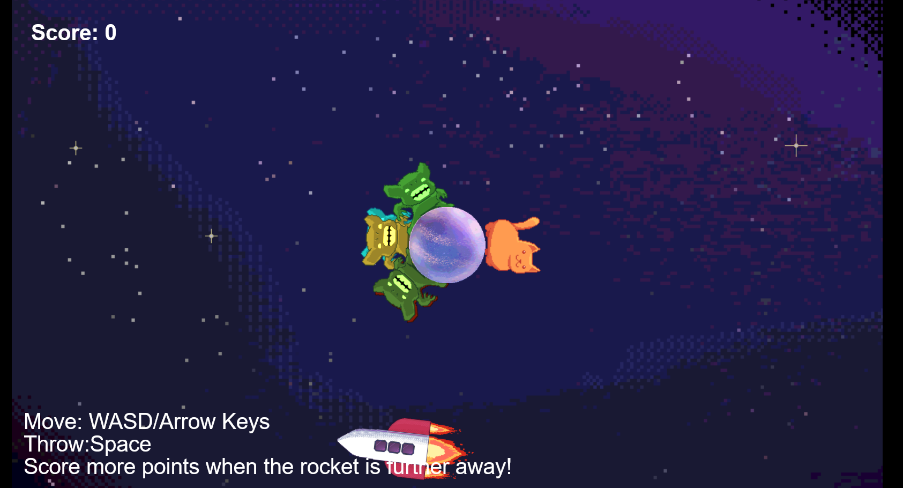
Made By: Sean Rowley, Miles Marsh, Angela Ku, Cassidy Aydin, &
Sooin Jung
Description: A game made in Construct 3 where you walk around
a planet and throw goblins at a spaceship.
What I Did: Helped with coming up with the ideas and made a
prototype in phaser for our eventual final work in Construct 3.
Mafia Acessibilty Mods ( Board & Rules )
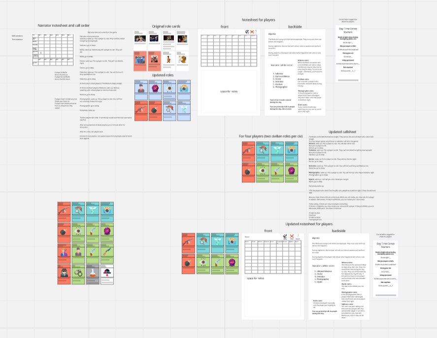
Made By: Sean Rowley, Emily Ramirez, Armenia Denson, & Samuel
Si
Description: A board game made in Miro, that just focuses on
adding accessibility options to the popular social deduction game
Mafia.
What I Did: Helped come up with all the ideas, set up the Miro
board, made all the note sheets and things that look nice on the miro
board, and moved them all around to make sure they were easy to access
and see.
Valheim Board Game ( Board | Rules )
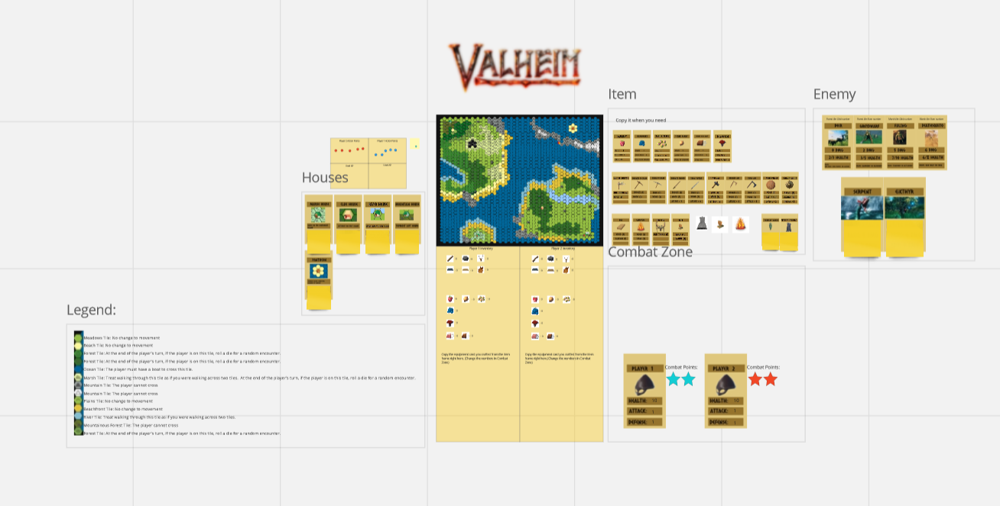
Made By: Sean Rowley, Moises Perez, Julian Liaw, Kevin Chacko,
Daren Bartolucci, and Longyu Li
Description: A Miro board game version of the popular game
Valheim.
What I Did: Made the map, made all the cards, made the legend,
helped with a lot of the ideas, helped to set up and clean up the Miro
board, and made the entire rules document and made it look really
cool.
Games I'm Working On:
• Bevy Jam #4 game (group with Miles Marsh)
• Unreal engine letter sorting minigame (group with Miles Marsh)
• Bevy gravity based endless runner where they player is jumping from
planet to planet to escape a black hole (group with Miles Marsh)
• Unity game where the player fights waves of endless robots (solo)
• A Typescript and HTML basic farming game made with an ASCII art
style (group with Miles Marsh, Calax Raffield, and Cameron Dodd)
• Unreal engine game with a grappling hook where you solve
platforming/parkour puzzles (solo)
Cool Coding Things I've Done:
• A cool automatic Fractal generator in C++. It was given to me
broken, not being able to make proper looking fractals, and it was my
job to fix it and make the output correct. (
Code
|
Video )
• A Wordle solver made in C, it's a companion to the recreation of
Wordle I made in C, and runs in tandem and can solve the Wordle
puzzles. (
Code
|
Video )
• A state machine Robot in C++, that sends and recieves ticks from a
server to move around. It's meant to go along with the Item Loader to
make a text based adventure game. (
Code
|
Video
)
• An Item Loader made in C++ for a text based adventure game. Makes
rooms and populates them with items that the player can interact with.
(
Code
|
Video
)